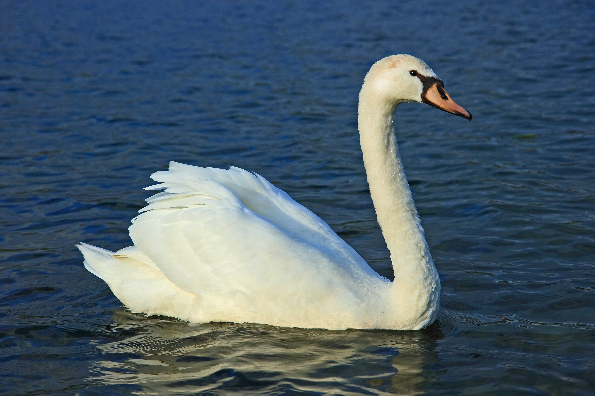

El cisne es un ave acuática grande que vive en lagos, ríos y lagunas. Pertenece al género Cygnus y es conocido por su cuello largo y su color blanco.

Tiene el cuello muy largo. Sus plumas normalmente son blancas (aunque algunas especies son negras). Nada muy bien y también puede volar. Tiene patas palmeadas para nadar. Vive cerca del agua.
Es una de las aves acuáticas más grandes. Los cisnes suelen vivir en pareja. Son animales tranquilos, pero pueden ser agresivos si se sienten en peligro. Se alimentan de plantas, algas y pequeños animales del agua. Habitan en Europa, Asia, América y otras regiones.